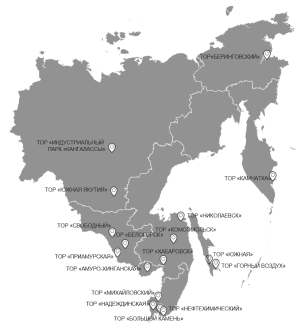

Территории опережающего развития
Территория опережающего социально-экономического развития (ТОСЭР) – часть территории субъекта Российской
Федерации, на которой в соответствии с решением Правительства Российской Федерации установлен особый
правовой режим осуществления предпринимательской и иной деятельности в целях формирования благоприятных
условий для привлечения инвестиций, обеспечения ускоренного социально-экономического развития и создания
комфортных условий для обеспечения жизнедеятельности населения.
Резидентами территорий опережающего развития могут быть индивидуальные предприниматели и юридические лица,
заключившие с управляющей компанией соглашение об осуществлении деятельности на данной территории. Для них
предусмотрен особый налоговый режим и облегченные правила ведения бизнеса: ставка налога на прибыль не
более 5% в течение первых пяти лет, уменьшенные социальные взносы, может быть предусмотрено освобождения
от налога на недвижимость, таможенные преференции.
ТОСЭР «Якутия»

ТОСЭР «Якутия»
Расстояние от ТОCЭР до международного аэропорта «Якутск» по автомобильной дороге – 33 км; до морских портов:
Владивосток – 3154 км, Ванино – 2896 км, Магадан – 1718 км, Тикси – 1694 км. Ближайшие жилые дома находятся
на расстоянии 50 м от границы ТОР.
Резиденты могут оформить земельные участки без процедуры торгов, бесплатно подключиться к инженерным сетям, получить таможенные и миграционные преференции. Предусмотрены налоговые льготы:
Резиденты могут оформить земельные участки без процедуры торгов, бесплатно подключиться к инженерным сетям, получить таможенные и миграционные преференции. Предусмотрены налоговые льготы:
- 1. Заявительный порядок возмещения НДС. Зачет (возврат) суммы налога, заявленной к возмещению в налоговой декларации, до завершения камеральной налоговой проверки.
- 2. Налоговая ставка по налогу на прибыль в федеральный бюджет – 0% в течение 5 налоговых периодов, начиная с налогового периода, в котором была получена первая прибыль. Налоговая ставка по налогу в бюджет субъектов РФ – не более 5% в течение 5 налоговых периодов, начиная с налогового периода, в котором была получена первая прибыль от деятельности, осуществляемой при исполнении соглашений на ТОСЭР, и не может быть менее 10% в течение следующих 5 налоговых периодов.
- 3. НДПИ. Применение понижающего коэффициента, характеризующего территорию добычи полезного ископаемого (КТД 1) принимается равным:
-
Год 1 2 3 4 5 6 7 8 9 10 11 и далее Ктд 0 0.2 0.4 0.6 0.8 1 - 4. Тарифы страховых взносов в сумме составляют 7,6 %.
ТОСЭР «Южная Якутия»
Расстояние от ТОР «Южная Якутия» до Федеральной трассы АЯМ (Амуро-Якутская магистраль) М-56 – 760 м; до
международного аэропорта «Якутск» по автомобильной дороге – 750 км; до морских портов: Ванино – 2125 км;
ближайшие жилые дома находятся на расстоянии 17 км от предполагаемой границы ТОР; территория 1,7 км на юг от
устья ручья Дежневка.
Резиденты могут оформить земельные участки без процедуры торгов, бесплатно подключиться к инженерным сетям, получить таможенные и миграционные преференции. Предусмотрены налоговые льготы:
Резиденты могут оформить земельные участки без процедуры торгов, бесплатно подключиться к инженерным сетям, получить таможенные и миграционные преференции. Предусмотрены налоговые льготы:
- 1. Заявительный порядок возмещения НДС. Зачет (возврат) суммы налога, заявленной к возмещению в налоговой декларации, до завершения камеральной налоговой проверки.
- 2. Налоговая ставка по налогу на прибыль в федеральный бюджет – 0% в течение 5 налоговых периодов, начиная с налогового периода, в котором была получена первая прибыль. Налоговая ставка по налогу в бюджет субъектов РФ – не более 5% в течение 5 налоговых периодов, начиная с налогового периода, в котором была получена первая прибыль от деятельности, осуществляемой при исполнении соглашений на ТОСЭР, и не может быть менее 10% в течение следующих 5 налоговых периодов.
- 3. НДПИ. Применение понижающего коэффициента, характеризующего территорию добычи полезного ископаемого (КТД 1) принимается равным:
-
Год 1 2 3 4 5 6 7 8 9 10 11 и далее Ктд 0 0.2 0.4 0.6 0.8 1 - 4. Тарифы страховых взносов в сумме составляют 7,6 %.
Критерии для потенциального резидента
- Под резидентом ТОР понимается индивидуальный предприниматель или являющееся коммерческой организацией юридическое лицо, государственная регистрация которых осуществлена на территории ТОР и которые не имеют филиалов вне ТОР.
- Необходимый минимальный объем инвестиций должен составлять 500 000 рублей.
- Отсутствие у индивидуального предпринимателя или юридического лица недоимки по налогам и сборам, страховым взносам в государственные внебюджетные фонды Российской Федерации, задолженности по иным обязательным платежам в бюджеты бюджетной системы Российской Федерации за прошедший календарный год, размер которых превышает двадцать пять процентов балансовой стоимости активов заявителя, по данным бухгалтерской (финансовой) отчетности за последний отчетный период (пп.7 п.7 ст. 11 №212-ФЗ).
- Компания не должна находиться в процессе реорганизации, ликвидации, банкротства.
- Виды предпринимательской деятельности, должны соответствовать видам деятельности, закрепленным в соответствующих Постановлениях Правительства РФ о создании ТОР.
Часто задоваемые вопросы о ТОР